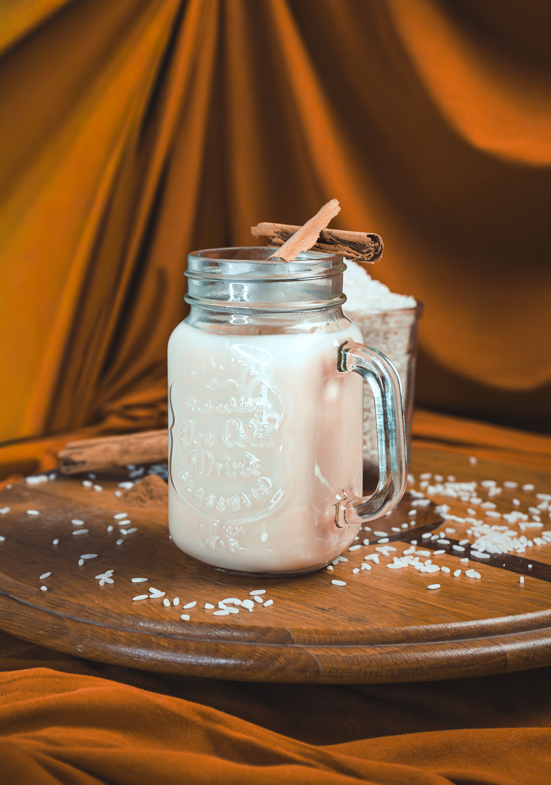

Horchata

Description: A simplified version of a light and refreshing Mexican drink
Ingredients
- 2 sticks of cinnamon bark
- 1 tbsp vanilla extract
- 1l rice milk
- 1.5l almond milk
- 3 tbsp maple syrup
Instructions
- Add 500ml rice milk, 500ml almond milk and the cinnamon bark to a pot
- Bring pot to boil and reduce tempreture to low heat and allow to simmer for 20 mintues.
- Remove pot from heat and allow to sit for another 20 mintues
- Add the remaining almond milk and rice milk to the mixture
- Add the vanilla extract and maple syrup and mix until well combined
- Pour the mixture into a jug and place in the fridge until cool
- Serve over a glass of ice nd sprinkle some cinnamon ontop of the drink
Home